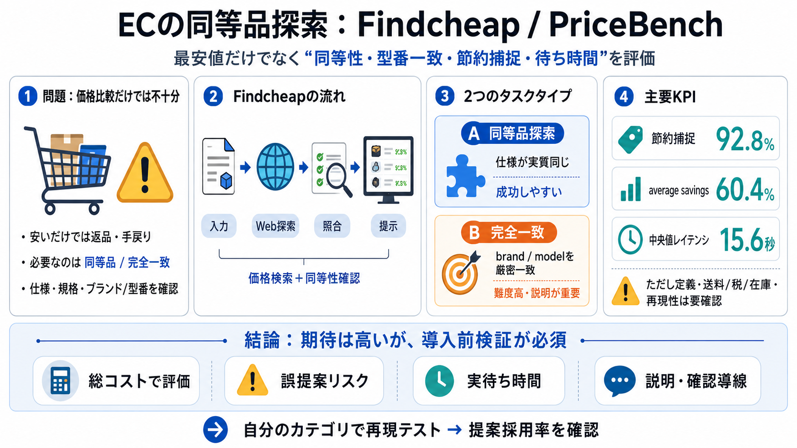

HARPA AI | Best Price Tracker Browser Extensions 2026: Chrome, Firefox, Edge, Safari & iOS
LIBRARYAPIGUIDESAI COMMANDSBLOG # Best Price Tracker Browser Extensions 2026: Chrome, Firefox, Edge, Safari & iOS [...]…

LIBRARYAPIGUIDESAI COMMANDSBLOG # Best Price Tracker Browser Extensions 2026: Chrome, Firefox, Edge, Safari & iOS [...]…
About Founder, Kirk Williams @PPCKirkOur Team of PPC ExpertsWhy Choose ZATO?"PPC Ponderings" (book)"Stop the Scale" (bo…
Log in Log in Forgotten account? ## U.S. News and World Report's post []( ### U.S. News and World Report 7 May…
Budget benchmarks vary by company size. Startups (under 50 employees) typically spend $2,000 to $25,000 per year on rese…
Get Frommer’s free newsletter (always written by humans, never AI) Get Frommer’s free newsletter (always written by hu…